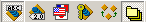

The imported assembly viewer is the main screen of ISE Assembly Manager. It is the one that appears when you launch the application. It gives you access to all facilities provided by ISE Assembly Manager. This reference aims at showing you how to use it.
The `File' menu provides you with another way to close ISE Assembly Manager by clicking on the `Exit' menu item.
The first six menu items enable you to show new columns in the array. By default, only the assembly name and the path to Eiffel sources are visible. But you may want to see also the assembly version, culture and public key or assembly dependencies That is the aim of these six items. The first six toolbar buttons give you the same opportunity: 
The last two items of the `View' menu are only a faster way to show all columns or come back to the initial layout.
Here are some screenshots of the imported assembly viewer with different possible layouts:
Note that when you click on `Show dependencies', a new column will be added to the initial array. But it will only show the names of dependencies. If you want some more precise information about them, just select `Dependency Viewer' in the `Tools' menu to open the dependency viewer and have a more complete view of each dependency.
 ) gives you the ability to launch the dependency viewer, which lists all dependencies of the selected assembly.
) gives you the ability to launch the dependency viewer, which lists all dependencies of the selected assembly.See also: How to view assembly dependencies?
See also: How to edit an imported assembly?
See also: How to remove an assembly from the Eiffel assembly cache?
See also: How to update Eiffel classes?
See also: How to import a signed assembly to the Eiffel assembly cache?
 ) opens the help topics about ISE Eiffel Studio where you can find the current help about ISE Assembly Manager.
) opens the help topics about ISE Eiffel Studio where you can find the current help about ISE Assembly Manager.